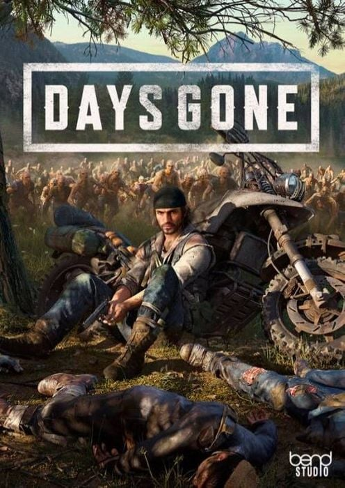

Days Gone
Select A Game Down Below!
Summary
"Days Gone" is an action-adventure survival horror game developed by Bend Studio and published by Sony Interactive Entertainment. Set in a post-apocalyptic open world, players assume the role of Deacon St. John, a former outlaw-turned-drifter navigating the Pacific Northwest wilderness. The game follows Deacon's quest for redemption and survival in a world overrun by zombie-like creatures known as Freakers. With its compelling narrative, intense combat, and dynamic weather system, "Days Gone" offers a gripping survival experience filled with exploration, crafting, and adrenaline-pumping encounters against both human and Freaker threats.
More Detail
"Days Gone" is a gripping survival horror game that immerses players in a post-apocalyptic world teeming with danger and desperation. Set in the Pacific Northwest, the game unfolds in a vast and atmospheric open world ravaged by a global pandemic that has turned much of humanity into zombie-like creatures known as Freakers. Players step into the shoes of Deacon St. John, a rugged and resourceful drifter navigating this unforgiving landscape. Haunted by personal tragedy and seeking redemption, Deacon embarks on a perilous journey filled with harrowing encounters, moral dilemmas, and unexpected alliances. At its core, "Days Gone" offers a compelling narrative that unfolds through a series of main story missions, side quests, and dynamic encounters. As players explore the diverse environments of the Pacific Northwest, they uncover the dark secrets of the world and the characters who inhabit it. The game's storyline is driven by Deacon's quest to survive, unravel the mystery of the pandemic, and confront the various factions vying for control in the post-apocalyptic wilderness. Survival is paramount in "Days Gone," with players facing constant threats from both human enemies and hordes of Freakers. Combat is intense and visceral, requiring careful planning, resource management, and skillful execution. Players can utilize a variety of weapons, traps, and stealth tactics to outmaneuver and defeat their adversaries. In addition to combat, players must also contend with the harsh realities of survival in a hostile environment. This includes scavenging for supplies, managing limited resources such as fuel and ammunition, and repairing and upgrading Deacon's motorcycle, his primary means of transportation and survival. The dynamic weather system further adds to the immersive experience, with changing weather conditions impacting gameplay and strategy. Rain can dampen visibility and muffle sound, while fog can obscure threats and create opportunities for stealthy approaches. Players must adapt to these environmental factors as they navigate the treacherous wilderness. "Days Gone" also features a robust crafting system, allowing players to craft makeshift weapons, explosives, and survival items using materials found in the world. This adds depth to gameplay, as players must carefully consider their crafting choices and prioritize their resources to survive. Overall, "Days Gone" offers a compelling blend of gripping storytelling, intense combat, and immersive survival gameplay, creating an unforgettable experience set in a world on the brink of collapse. With its richly detailed world, engaging characters, and adrenaline-fueled action, "Days Gone" stands as a standout title in the survival horror genre.